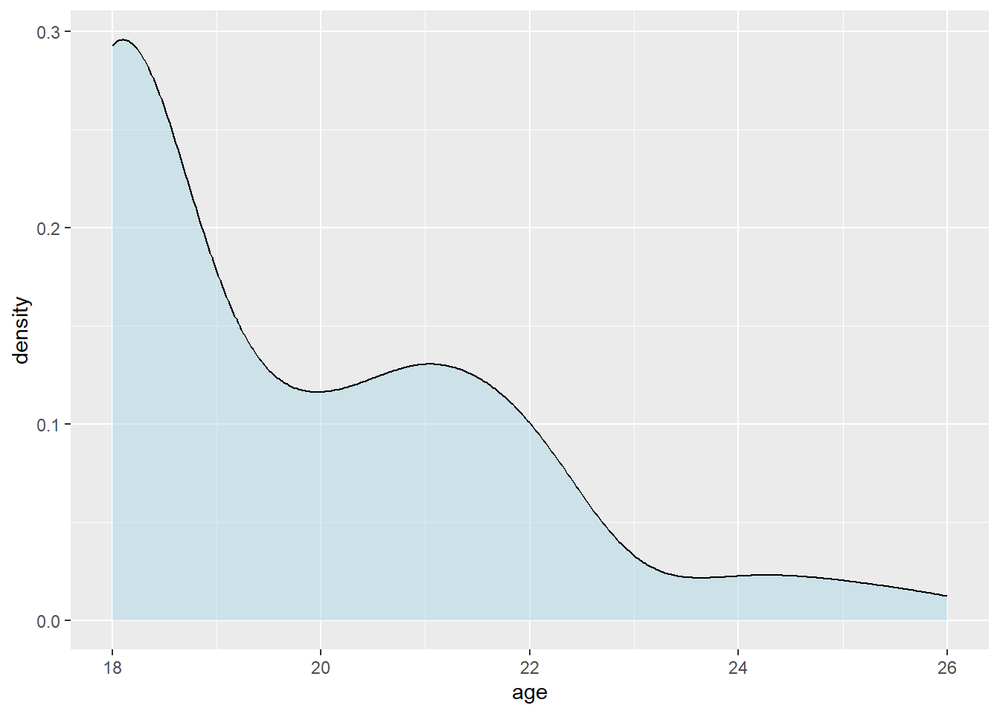
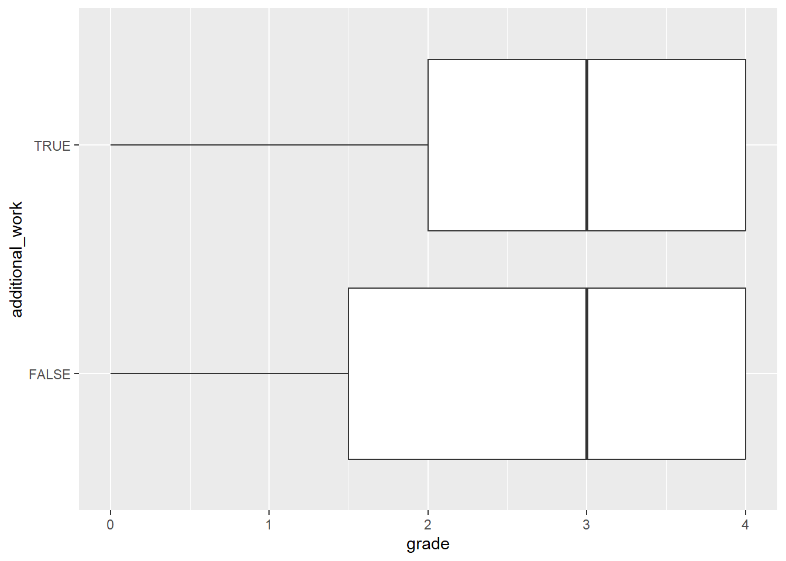
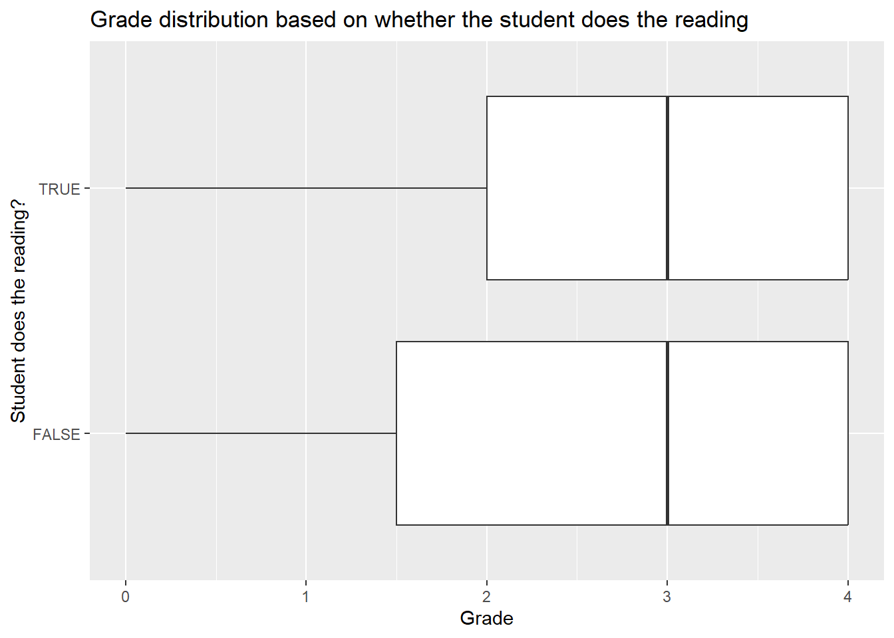

v1 <- c("A", "B", "C") # character vector with 3 elements
v2 <- 25 # numeric vector with 1 element
v3 <- 1:10 # numeric vector with 10 elements - integers from 1 to 10Faculty workshop: Introduction to R
January 2025
Objectives
Why R?
- Free and open-source
- Reproducible
- Widely used in academia and industry; up-to-date with the latest technological developments
- Very versatile: extensive package ecosystem for statistics and more
- Powerful data wrangling and visualization capabilities
- Extensive community support (open-access books, tutorials, forums, AI tools, etc.)
Why tidyverse?
- Clean, consistent, intuitive, readable syntax for all steps of the data analysis process
- Limited set of functions that can be combined in many ways
- Many packages beyond core
tidyversewith the same underlying design, grammar, and data structures, therefore easier to learn advanced techniques
Introduction to R
Objects in R
One of the most basic types of objects in R is a vector. A vector is a collection of values of the same type, such as numbers, characters, or logicals (TRUE/FALSE). You can create a vector with the c() function, which stands for concatenate. If you assign a vector to an object with the assignment operator <-, your vector will be saved in your environment so you can work with it within your current R session. Some examples of creating vectors are:
To subset or extract elements from a vector, you can use square brackets [ ] with an index. For example, v1[1] returns the first element of v1, v3[2:5] returns the 2nd to 5th elements of v3, and v3[-c(2, 4, 6)] returns all but the 2nd, 4th and 6th elements of v3.
v1[1][1] "A"v3[2:5][1] 2 3 4 5v3[-c(2, 4, 6)][1] 1 3 5 7 8 9 10A dataframe (or “tibble” in tidyverse) is a special type of object that combines vectors into a rectangular table. Each column of a dataframe is a vector, and each row is an observation. usually you would load data from an external source, but you can create a dataframe with the data.frame() and a tibble with the tibble() function. You can also convert other data types such as matrices to tibbles with the as_tibble() function. Both functions take vectors as their arguments. Tibbles are preferred because they are more modern and have some convenient features that dataframes don’t, but for the most part, differences are minor and for the most part it does not matter whether you work with tibbles or dataframes.
A simple example of creating a tibble is (make sure to load tidyverse first):
library(tidyverse)
# define vectors within the tibble() function
tibble(
name = c("Alice", "Bob", "Chris"),
height = c(165, 180, 175)
)# A tibble: 3 × 2
name height
<chr> <dbl>
1 Alice 165
2 Bob 180
3 Chris 175Functions in R
Functions are reusable pieces of code that perform a specific task. They take arguments as inputs and return one or more pieces of output. You will mostly work with functions loaded from various packages or from the base R distribution, and in some cases you may write your own functions to avoid repetition or improve the readability of your code. We will cover writing your own functions later in the program.
As with vectors, the output of a function is saved to your environment only if you assign the result to an object. For example, sum(x) will display the sum of the elements of the vector x, but sum <- sum(x) will save this result to an object.
x <- c(1, 5, 6, 2, 1, 8)
sum(x)[1] 23result <- sum(x)Some important functions on vectors are
mean(x) # return the mean; add the argument na.rm = TRUE if missing values should be excluded[1] 3.833333length(x) # give the length of the vector (number of elements)[1] 6unique(x) # list the unique elements of the vector[1] 1 5 6 2 8To learn more about a function and its arguments, you can use the ? operator or the help() function, for example by typing ?sum (or equivalently, ?sum()). It is good practice to request help files from your console and not you R script, since there is no need to save these queries for the future.
Importing data
R can handle practically any type of data, from simple text files to files used by other (not necessarily open-source) software and complex databases. This gives users a lot of flexibility in terms of data sources and formats.
In addition to using your own data (e.g. as exported from a survey), the Data Center keeps a continuously updated list of useful datasets by discipline, accessible here.
In the following, we’ll import a CSV file from a URL, but if you want to know more about importing various common file types, follow our more complete tutorial on importing data.
We can use the read_csv() function to import a CSV file uploaded to the Data Center’s GitHub repository. The “Raw” button on the GitHub page opens the file in a plain text format, which is the format that read_csv() expects. Our data is based on a dataset on student characteristics and grades at a university (original source). We assign the imported tibble to an object called data. Note: make sure to load tidyverse before proceeding with the rest of the tutorial.
data <- read_csv("https://github.com/ucrdatacenter/projects/raw/refs/heads/main/apprenticeship/2025h1/student_data.csv")A few notes regarding importing and exporting data:
- Always make sure you know your current working directory and the relative path to your data directory. It is better to use relative rather than absolute file paths (i.e.
data/data.csvinstead ofC:/User/Project/data/data.csv). - Note that if you are using Windows, you may need to replace the backslashes (\) in the file path with forward slashes (/) to avoid errors.
- You can import files directly from URLs, although you usually need the URL of a raw file. If a file downloads immediately instead of opening in a raw format, you can try to copy that download link by right-clicking and selecting “Copy link address”; the
import()function from theriopackage might be successful with those links. - To export data from R, you can almost always use the
write_...()function corresponding to the desired file format, e.g.write_csv(). For Excel files the preferred export function iswrite_xlsx(), and for SPSS’s .sav files it iswrite_sav(). - For other file formats, the generic
write()function is useful; you can specify any file format, and if your input data is readable in the chosen format, the file will export properly. - In all
write_()functions you need to specify the data you’d like to save and the output file path (absolute or relative) including chosen file extension.
Data wrangling
Data wrangling is the process of cleaning, structuring, and enriching raw data into a more usable format. The dplyr package is a part of the tidyverse and provides a set of functions that can be combined to perform the most common data wrangling tasks. The package is built around the concept of the “grammar of data manipulation”, which is a consistent set of verbs that can be combined in many ways to achieve the desired result.
The main functions in dplyr are filter(), select(), mutate(), arrange(), group_by(), summarize(), and rename(). dplyr also provides a set of functions for combining datasets: bind_rows() and bind_cols() for row-wise and column-wise binding, and left_join(), right_join(), inner_join(), and full_join() for joining datasets based on common variables. These functions can be combined using the pipe operator |> (or %>%, they are mostly equivalent) to create a data wrangling workflow. The pipe operator takes the output of the function on its left and passes it as the first argument to the function on its right. This allows you to chain multiple functions together in a single line of code, making your code more readable and easier to understand.
In the following, we’ll work with the data object imported in the previous section and show how to use the main dplyr functions to clean the data so it is suitable for analysis. These steps are useful even if the input data is quite clean, as we often need to work with only a subset of observations/variables, define new variables, or aggregate the data.
Filtering observations
If we want to keep only a subset of observations, we can use the filter() function. We can specify a logical condition as the argument to filter(), and only observations that meet that condition will be kept. For example, to keep only students who are over 21 years old, we can use the following code:
filter(data, age > 21)# A tibble: 27 × 9
id age sex scholarship additional_work reading notes listening grade
<dbl> <dbl> <chr> <dbl> <lgl> <lgl> <lgl> <lgl> <dbl>
1 5005 22 Male 50 FALSE TRUE FALSE TRUE 4
2 5015 26 Male 75 TRUE FALSE FALSE TRUE 4
3 5016 22 Male 50 FALSE FALSE TRUE FALSE 4
4 5018 22 Male 50 FALSE TRUE FALSE FALSE 4
5 5023 22 Male 50 TRUE TRUE TRUE TRUE 3
6 5024 25 Male 25 TRUE TRUE TRUE FALSE 4
7 5029 24 Male 50 FALSE FALSE FALSE FALSE 3
8 5032 25 Male 50 TRUE FALSE TRUE FALSE 3
9 5040 22 Female 50 FALSE FALSE TRUE TRUE 4
10 5042 24 Male 50 TRUE FALSE TRUE FALSE 4
# ℹ 17 more rowsWe can also apply logical conditions to character variables, e.g. to keep only students who went to a private high school and who did not receive a failing grade. Filters can be combined with AND (, or &) and OR (|) operators into a single function. Note the use of quotation marks around character values in the logical condition and the double equal sign == to denote equality and != for “not equal”.
filter(data, sex == "Male", grade != 0) # A tibble: 87 × 9
id age sex scholarship additional_work reading notes listening grade
<dbl> <dbl> <chr> <dbl> <lgl> <lgl> <lgl> <lgl> <dbl>
1 5001 21 Male 50 TRUE TRUE TRUE FALSE 4
2 5002 20 Male 50 TRUE TRUE FALSE TRUE 4
3 5003 21 Male 50 FALSE FALSE FALSE FALSE 4
4 5005 22 Male 50 FALSE TRUE FALSE TRUE 4
5 5006 20 Male 50 FALSE TRUE FALSE TRUE 4
6 5007 18 Male 75 FALSE FALSE TRUE TRUE 2
7 5015 26 Male 75 TRUE FALSE FALSE TRUE 4
8 5016 22 Male 50 FALSE FALSE TRUE FALSE 4
9 5018 22 Male 50 FALSE TRUE FALSE FALSE 4
10 5020 18 Male 50 FALSE FALSE FALSE TRUE 3
# ℹ 77 more rowsAnother useful logical operator is %in%, which allows you to filter observations based on a list of values. For example, to keep only students who receive either 75% or 100% scholarships, we can use the following code:
filter(data, scholarship %in% c(75, 100))# A tibble: 65 × 9
id age sex scholarship additional_work reading notes listening grade
<dbl> <dbl> <chr> <dbl> <lgl> <lgl> <lgl> <lgl> <dbl>
1 5007 18 Male 75 FALSE FALSE TRUE TRUE 2
2 5012 18 Female 75 TRUE FALSE TRUE FALSE 0
3 5013 18 Female 75 FALSE TRUE FALSE FALSE 0
4 5014 19 Female 100 FALSE TRUE FALSE FALSE 4
5 5015 26 Male 75 TRUE FALSE FALSE TRUE 4
6 5017 18 Female 100 FALSE TRUE FALSE FALSE 4
7 5019 18 Female 75 FALSE TRUE FALSE FALSE 4
8 5021 18 Male 100 TRUE FALSE FALSE TRUE 4
9 5022 18 Male 100 FALSE FALSE FALSE FALSE 4
10 5030 19 Male 75 FALSE FALSE FALSE TRUE 2
# ℹ 55 more rowsSelecting variables
If we want to keep only a subset of variables, we can use the select() function. We can specify the variables we want to keep (or exclude, with - signs) as the arguments to select(), and only those variables will be kept. For example, to keep only the Id and Student_Age variables, we can use the following code:
select(data, id, age)# A tibble: 145 × 2
id age
<dbl> <dbl>
1 5001 21
2 5002 20
3 5003 21
4 5004 18
5 5005 22
6 5006 20
7 5007 18
8 5008 18
9 5009 19
10 5010 21
# ℹ 135 more rowsWe can also select columns based on their location in the tibble or by looking for patterns in the column names:
select(data, id:sex) # select a range of columns# A tibble: 145 × 3
id age sex
<dbl> <dbl> <chr>
1 5001 21 Male
2 5002 20 Male
3 5003 21 Male
4 5004 18 Female
5 5005 22 Male
6 5006 20 Male
7 5007 18 Male
8 5008 18 Female
9 5009 19 Female
10 5010 21 Female
# ℹ 135 more rowsselect(data, starts_with("a")) # select columns that start with "a"# A tibble: 145 × 2
age additional_work
<dbl> <lgl>
1 21 TRUE
2 20 TRUE
3 21 FALSE
4 18 TRUE
5 22 FALSE
6 20 FALSE
7 18 FALSE
8 18 TRUE
9 19 FALSE
10 21 FALSE
# ℹ 135 more rowsselect(data, -grade) # keep everything but "grade"# A tibble: 145 × 8
id age sex scholarship additional_work reading notes listening
<dbl> <dbl> <chr> <dbl> <lgl> <lgl> <lgl> <lgl>
1 5001 21 Male 50 TRUE TRUE TRUE FALSE
2 5002 20 Male 50 TRUE TRUE FALSE TRUE
3 5003 21 Male 50 FALSE FALSE FALSE FALSE
4 5004 18 Female 50 TRUE FALSE TRUE FALSE
5 5005 22 Male 50 FALSE TRUE FALSE TRUE
6 5006 20 Male 50 FALSE TRUE FALSE TRUE
7 5007 18 Male 75 FALSE FALSE TRUE TRUE
8 5008 18 Female 50 TRUE FALSE TRUE TRUE
9 5009 19 Female 50 FALSE FALSE FALSE FALSE
10 5010 21 Female 50 FALSE FALSE TRUE FALSE
# ℹ 135 more rowsA pipe workflow allows us to combine the filtering and selecting operations into a single, step-by-step workflow:
data |>
filter(age > 21) |>
select(id, age)# A tibble: 27 × 2
id age
<dbl> <dbl>
1 5005 22
2 5015 26
3 5016 22
4 5018 22
5 5023 22
6 5024 25
7 5029 24
8 5032 25
9 5040 22
10 5042 24
# ℹ 17 more rowsCreating new variables
If we want to create a new variable based on existing variables, we can use the mutate() function. We can specify the new variable name and the calculation for the new variable as the arguments to mutate(), and the new variable will be added to the dataset. For example, we can create a new variable participation, which is TRUE if the student does the assigned reading and listens in class and takes notes. We create this variable using a logical expression, using a simplified notation (i.e. not write out reading == TRUE, as doing so is not necessary for logical variables). Andother variable, scholarship_decimal, is created by dividing the Scholarship variable by 100 to get a variable that represents the value of scholarship as a fraction of total cost.
data |>
# create new variables
mutate(participation = reading & notes & listening,
scholarship_decimal = scholarship / 100) |>
# keep only new variables and student id
select(id, participation, scholarship_decimal)# A tibble: 145 × 3
id participation scholarship_decimal
<dbl> <lgl> <dbl>
1 5001 FALSE 0.5
2 5002 FALSE 0.5
3 5003 FALSE 0.5
4 5004 FALSE 0.5
5 5005 FALSE 0.5
6 5006 FALSE 0.5
7 5007 FALSE 0.75
8 5008 FALSE 0.5
9 5009 FALSE 0.5
10 5010 FALSE 0.5
# ℹ 135 more rowsCategorical variables as factors
It is often useful to clearly define the levels of a categorical variable, especially if these levels have a meaningful ordering. For unordered categories, R provides the data type factor, while for ordered variables the relevant data type is ordered. Factor and ordered values appear as character strings when viewed, but are treated as numbers with labels internally, which makes it easier to show descriptives of the variable and include it in models. For example, we can define sex as a factor with two levels. If we don’t specify the levels of the factor explicitly, then the levels will be sorted alphabetically.
data |>
mutate(sex = factor(sex)) |>
# view variable types and levels by looking at the structure of the data
str()tibble [145 × 9] (S3: tbl_df/tbl/data.frame)
$ id : num [1:145] 5001 5002 5003 5004 5005 ...
$ age : num [1:145] 21 20 21 18 22 20 18 18 19 21 ...
$ sex : Factor w/ 2 levels "Female","Male": 2 2 2 1 2 2 2 1 1 1 ...
$ scholarship : num [1:145] 50 50 50 50 50 50 75 50 50 50 ...
$ additional_work: logi [1:145] TRUE TRUE FALSE TRUE FALSE FALSE ...
$ reading : logi [1:145] TRUE TRUE FALSE FALSE TRUE TRUE ...
$ notes : logi [1:145] TRUE FALSE FALSE TRUE FALSE FALSE ...
$ listening : logi [1:145] FALSE TRUE FALSE FALSE TRUE TRUE ...
$ grade : num [1:145] 4 4 4 4 4 4 2 4 2 0 ...Data cleaning as a single pipeline
Until now we didn’t save any of our data wrangling steps as new objects, so the original data object is still unchanged. If we want to save the cleaned data as a new object, we can assign the result of the pipe workflow to a new object.
data_subset <- data |>
filter(age > 21) |>
mutate(sex = factor(sex)) |>
select(id, age, sex)Data visualization
The logic of ggplot2
The ggplot2 package builds up figures in layers, by adding elements one at a time. You always start with a base ggplot where you specify the data used by the plot and possibly the variables to place on each axis. These variables are specified within an aes() function, which stands for aesthetics.
The ggplot() function in itself only creates a blank canvas; we need to add so-called geoms to actually plot the data. You can choose from a wide range of geoms, and also use multiple geoms in one plot. You can add elements to a ggplot objects with the + sign. You should think of the + sign in ggplot workflows in the same way you think of the pipe operators in data wrangling workflows.
Univariate plots
You can plot a single continuous variable with a histogram, a density plot, or a boxplot. Other than the name of the dataset and the variable, no additional arguments need to be specified; but you can customize the plot by adding arguments to the geom_ functions.
# binwidth or bins determine the number of bins
# with binwidth = 1, each bin is 1 year wide
ggplot(data, aes(x = age)) +
geom_histogram(binwidth = 1, color = "black", fill = "lightblue")ggplot(data, aes(x = age)) +
geom_density(fill = "lightblue", alpha = 0.5)
ggplot(data, aes(x = age)) +
geom_boxplot()To compare the frequencies of discrete variables, you can use a bar plot.
ggplot(data, aes(x = additional_work)) +
geom_bar()Bivariate plots
You can plot two continuous variables with a scatter plot. For example, you can plot the relationship between age and grade by specifying these variables as the x and y aesthetics:
ggplot(data, aes(x = age, y = grade)) +
geom_point()Fitting a smooth curve or a linear regression line to the scatter plot can help you see the overall trend in the data.
ggplot(data, aes(x = age, y = grade)) +
geom_point() +
geom_smooth()ggplot(data, aes(x = age, y = grade)) +
geom_point() +
# method = "lm" fits a linear model, se = FALSE removes the confidence interval
geom_smooth(method = "lm", se = FALSE)If points overlap a lot, it might be useful to add some jitter, i.e. random noise to distribute the points, by using geom_jitter() instead of geom_point().
ggplot(data, aes(x = age, y = grade)) +
geom_jitter() +
geom_smooth(method = "lm", se = FALSE)Categorical variables can be used to show the distribution of continuous variables by group. You can put a categorical variable on one of the axes, or use it on another aesthetic, such as the fill or color. Note that if a variable determines the fill, the color, and the shape of the points, that has to be specified inside an aes() function, while if the characteristic is pre-defined, then it goes outside the aes() function. Also note that if you specify aesthetics in the main ggplot() function, then they apply to all geoms, while if you specify them in a geom_...() function, they apply only to that geom.
ggplot(data, aes(x = grade, y = additional_work)) +
geom_boxplot()
ggplot(data) +
geom_density(aes(x = grade, fill = additional_work), alpha = 0.5)To plot two categorical variables, you can use a bar plot with an extra grouping argument specifying the fill of the bars. The next plot shows the number of students who do the class readings or not, and for each group we know whether they work take notes in class or not.
ggplot(data, aes(x = reading, fill = notes)) +
geom_bar()# to put the bars next to each other instead of on top, specify the position
ggplot(data, aes(x = reading, fill = notes)) +
geom_bar(position = "dodge")Customizing plot features
The two largest advantages of ggplot2 are the ability to layer multiple geoms on top of each other and the ability to extensively customize every plot by adding additional plot elements.
You can make the plot more informative by adding titles and axis labels.
ggplot(data, aes(x = grade, y = reading)) +
geom_boxplot() +
labs(title = "Grade distribution based on whether the student does the reading",
x = "Grade",
y = "Student does the reading?")
You can also change the appearance of the plot by changing the theme, the color palette, and the axis scales.
You can set the theme of the plot with one of the theme_...() functions, or set the theme for the entire R session with theme_set().
ggplot(data, aes(x = grade, y = reading)) +
geom_boxplot() +
labs(title = "Grade distribution based on whether the student does the reading",
x = "Grade",
y = "Student does the reading?") +
# set the theme of this plot to the pre-defined theme_light
theme_light()# set the theme of all future plots to the pre-defined theme_minimal
theme_set(theme_minimal())You can adjust the axis breaks and labels with the scale_x_...() and scale_y_...() functions.
ggplot(data, aes(x = grade, y = reading)) +
geom_boxplot() +
labs(title = "Grade distribution based on whether the student does the reading",
x = "Grade",
y = "Student does the reading?") +
# define the axis tick positions on the continuous x axis
scale_x_continuous(breaks = seq(0, 4, 0.5)) +
# relabel the items on the discrete y axis
scale_y_discrete(breaks = c(FALSE, TRUE), labels = c("No", "Yes"))More advanced features
The R Graph Gallery provides a long list of common plot types, and so do Chapters 4 and 5 of Modern Data Visualization with R. Both resources group geoms by the type of variable(s) plotted.
Saving plots
You can save ggplot objects to use outside of the R environment with the ggsave function. By default ggsave() saves the last plot displayed in your Plots panel. You always need to specify the file path of the saved plot, including the preferred file format (e.g. .png, .jpg, .pdf).
ggplot(data, aes(x = grade, y = age)) +
geom_point()
# Save last plot
ggsave("figures/plot1.png", scale = 1.5)Summary statistics
Summaries in the console
In the R console, the summary() function provides a quick overview of the data, showing the minimum, 1st quartile, median, mean, 3rd quartile, and maximum of each numerical variable, and levels for factors. The count() function provides a tibble of frequencies for any number of variables.
summary(data) id age sex scholarship
Min. :5001 Min. :18.00 Length:145 Min. : 25.00
1st Qu.:5037 1st Qu.:18.00 Class :character 1st Qu.: 50.00
Median :5073 Median :19.00 Mode :character Median : 50.00
Mean :5073 Mean :19.68 Mean : 64.76
3rd Qu.:5109 3rd Qu.:21.00 3rd Qu.: 75.00
Max. :5145 Max. :26.00 Max. :100.00
NA's :1
additional_work reading notes listening
Mode :logical Mode :logical Mode :logical Mode :logical
FALSE:96 FALSE:76 FALSE:68 FALSE:70
TRUE :49 TRUE :69 TRUE :77 TRUE :75
grade
Min. :0.000
1st Qu.:1.500
Median :3.000
Mean :2.755
3rd Qu.:4.000
Max. :4.000
count(data, sex, scholarship)# A tibble: 8 × 3
sex scholarship n
<chr> <dbl> <int>
1 Female 50 26
2 Female 75 19
3 Female 100 13
4 Male 25 3
5 Male 50 50
6 Male 75 23
7 Male 100 10
8 Male NA 1Export-ready summary tables
The gtsummary package provides a more customizable way to create tables for publication with the tbl_summary() function. In addition, the gtsave() function from the gt package allows you to save the table in a variety of formats, including as a Word or TeX file. Make sure to install and load the gtsummary and gt packages before using them.
# install.packages("gtsummary")
# install.packages("gt")
library(gtsummary)
library(gt)
# create a summary table of the data
tbl_summary(data)# the by argument allows for stratification by a variable
tbl_summary(data, by = sex) |>
# convert to gt object for export
as_gt() |>
# export table as a Word file
gtsave("summary_table.docx")Hypothesis testing
Most of the simple statistical tests are from base R, so they don’t rely on tidy principles, but many are compatible with tidy workflows to at least some extent. Most of them use a formula interface, where the dependent variable is on the left side of the tilde ~ and the independent variable(s) on the right side.
For example, a two-sided t-test requires a continuous dependent variable and a categorical independent variable inside the t.test() function. Similarly, the lm() function for linear regressions allows for multiple independent variables and automatically converts characters and factors to dummy variables.
# two-sided t-test for grade differences based on doing the reading
t.test(grade ~ reading, data = data)
# linear regression for grade based on age, scholarship, and doing the reading
lm(grade ~ age + scholarship + reading, data = data)
# linear regression based on all variables in the data
lm(grade ~ ., data = data)To get more detailed information about the results of a hypothesis test, we can assign the result to an object and use the summary() function to get the full output. In addition, the tbl_regression() function from the gtsummary package provides a publication-ready regression table.
fit <- lm(grade ~ ., data = data)
summary(fit)
tbl_regression(fit)